前言
OO第二单元的主题是 "多线程"，主要是让我们初步学习多线程的编程思想，理解和解决线程交互和线程安全问题，进一步深化对 "面向对象" 的理解。
本单元的三次作业都是和 "电梯调度问题" 有关，需要我们根据不同要求对电梯调度系统进行模拟。这三次作业不仅要求我们关注 "如何正确的加锁来解决线程安全问题"，还要求我们考虑到调度策略的整体性能。
由于以前没有接触过多线程编程，因此刚开始做作业时稍微有些吃力。但是我随着对 "多线程" 和 "线程同步" 理解的加深，在做后面的作业时越来越得心应手。同时，我也学会在代码中使用一些常用的设计模式，例如 "单例模式"、"工厂模式"、"流水线模式" 等等，进一步降低代码的耦合度，让代码层次更加清晰。
第一次作业分析
第一次作业比较简单，每个楼座只对一部电梯进行调度。这次作业主要是让我们熟悉线程创建、运行等基本操作，熟悉多线程的设计方法。
代码架构分析
本次作业中我们需要关注以下三个问题
- 如何将"生产者-消费者"模型运用在本次作业中？
- 如何通过加锁来解决线程安全问题？
- 电梯调度采用什么样的策略？
下面我针对这三个问题进行分析——
Producer-Consumer模型
在使用"生产者-消费者"模型之前我们需要明确——谁是消费者？谁是生产者？经过简单的分析我们不难发现——
- 输入线程（
InputHandler）从终端中获取用户的请求，所以输入线程是生产者 - 电梯线程（
Elevator）对用户请求进行处理，并将用户运送指定位置，因此电梯线程应该作为消费者。 - 生产者和消费者中间的托盘是什么呢？很显然，托盘应该是一个用来盛放用户请求的"容器"，于是我设置了请求队列类（
RequestTable）用来存放请求。
在我的设计中，RequestTable类一共实例化了5个对象，分别用来储存A、B、C、D、E座发出的请求。InputHandler类同时"拥有"这5个请求队列，在请求输入的时候直接根据请求发出地将请求放进对应的请求队列中。每个楼座的Elevator只有拥有本楼座的请求队列，只对该请求队列中的请求进行处理。所以最后的结构就是下面这个样子——
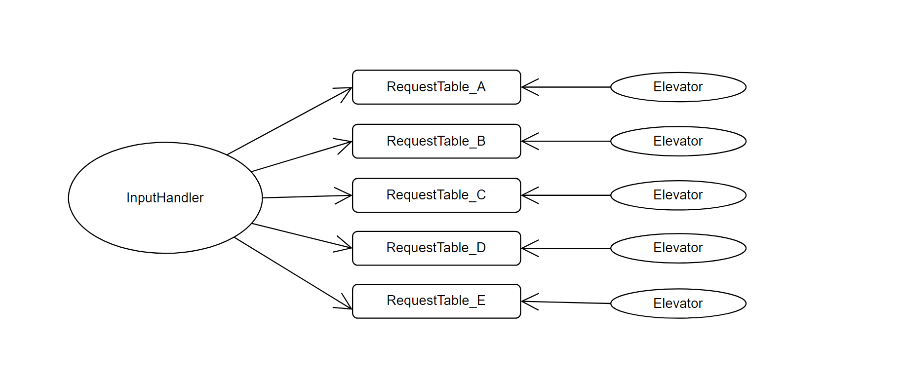
另外，基于封装的思想，我还对用户请求单独建一个类（Person）,在这个类中封装了单个请求的所有信息，包括请求人id、出发地、目的地。
public class Person{
private final int id;
private final char fromBuilding;
private final char toBuilding;
private final int fromFloor;
private final int toFloor;
//...
}所以，请求（
Person）是以什么形式存放在请求队列RequestTable呢？原来，在RequestTable类中我们有一个requestMap成员变量public class ResquestTable {
private endTag;
private HashMap<Integer, HashSet<Person>> requestMap;
}很明显，
requestMap的类型是HashMap，其中key代表楼层序号（\(key\in[1,10]\)），value表示的是在每个楼层发出的请求的集合。例如requestMap.get(5)就代表
"出发地在5楼的所有请求的集合"。
锁的设置
请求队列RequestTable可以同时被输入线程和电梯线程访问，因此存在线程安全问题。在本次作业中，我主要是采用了”对方法加锁“的方式，将RequestTable涉及到成员变量读写的方法全部加了锁，这样就可以保证每次只有一个线程来访问请求队列。
调度策略
众所周知，电梯调度问题本身是没有一个最优解的——一个算法在某种情况下可能效率比较高，但是总会出现一种特殊情况，使得该算法的性能远远落后于其他算法。目前已经有许多和电梯调度相关的算法，例如ALS,LOOK,SCAN等等，我们需要从中挑选一个平均性能占优并且比较稳定的算法。
往届学长大多选择的是 LOOK算法，而且我们日常乘坐的电梯大多数也是采用的这种算法。既然它能被大多数电梯使用，那这种算法一定有它的"过人之处"。因此，最终我选择LOOK作为电梯调度的策略。
LOOK
下面来简单介绍我在本次作业中使用的调度算法（LOOK）——
- 首先为电梯规定一个初始方向，然后电梯开始沿着该方向运动。
- 到达某楼层时，首先判断是否需要开门
- 如果发现电梯里有人可以出电梯（到达目的地），则开门让乘客出去；
- 如果发现该楼层中有人想上电梯，并且目的地方向和电梯方向相同，则开门让这个乘客进入。
- 接下来，进一步判断电梯里是否有人。如果电梯里还有人，则沿着当前方向移动到下一层。否则，检查请求队列中是否还有请求（目前其他楼层是否有乘客想要进电梯）——
如果请求队列不为空，且某请求的发出地是电梯"前方"的某楼层，则电梯继续沿着原来的方向运动。
如果请求队列不为空，且所有请求的发出地都在电梯"后方"的楼层上，或者是在该楼层有请求但是这个请求的目的地在电梯后方（因为电梯不会开门接反方向的请求），则电梯掉头并进入"判断是否需要开门"的步骤（循环实现）。
如果请求队列为空，且输入线程没有结束（即没有输入文件结束符），则电梯停在该楼层等待请求输入（wait）。
注意：电梯等待时运行方向不变。在我的设计中，运行方向是电梯的一个状态量而不是过程量，用来表示下一次move时的方向。当有新请求进入请求队列时，电梯被唤醒，此时电梯的运行方向仍然是电梯wait前的方向。
如果请求队列为空，且输入线程已经结束，则电梯线程结束。
策略类的设置
在本次作业中我采用了 "电梯类和策略类分离"
的设计。策略类（Strategy）可以获得当前电梯和请求队列的当前状态，并基于LOOK策略向电梯提供建议，建议包括OVER,
MOVE, REVERSE, OPEN,
WAIT五种。我们把这些建议封装到枚举类Advice中，以提高代码的可读性。
/*Strategy.java*/
public Advice getAdvice(int curFloor, int curNum, boolean direction,
HashMap<Integer, HashSet<Person>> destMap) {
//判断现在是否可以上下电梯
if (canOpenForOut(curFloor, destMap) || canOpenForIn(curFloor, curNum)) {
return Advice.OPEN;
}
//如果电梯里有人
if (curNum != 0) {
return Advice.MOVE;
}
//如果电梯里没有人
else {
//如果请求队列中没有人
if (requestTable.isEmpty()) {
if (requestTable.isOver()) {
return Advice.OVER; //如果输入结束，电梯线程结束
} else {
return Advice.WAIT; //如果输入未结束，电梯线程等待
}
}
//如果请求队列中有人
if (hasReqInOriginDirection(curFloor, direction)) {
return Advice.MOVE; //如果有请求发出地在电梯“前方”，则前当前方向移动一层
} else {
return Advice.REVERSE; //否则，电梯转向（仅状态改变，电梯不移动）
}
}
}Strategy类聚合在Elevator类中，电梯每到达一个楼层，就会调用策略类的getAdvice()方法来询问建议，并根据建议做出反应。
/*Elevator.java*/
public void run() {
while (true) {
Advice advice = strategy.getAdvice(num, building, floor,
direction,passenger, requestTable);
if (advice == Advice.OVER) {
break; //电梯线程结束
}
else if (advice == Advice.MOVE) {
move(); //电梯沿着原方向移动一层
}
else if (advice == Advice.REVERSE) {
direction = !direction; //电梯转向
}
else if (advice == Advice.WAIT) {
requestTable.waitRequest(); //电梯等待
}
else if (advice == Advice.OPEN) {
openAndClose(); //电梯开门
}
}
}代码复杂度分析
Method Metrics
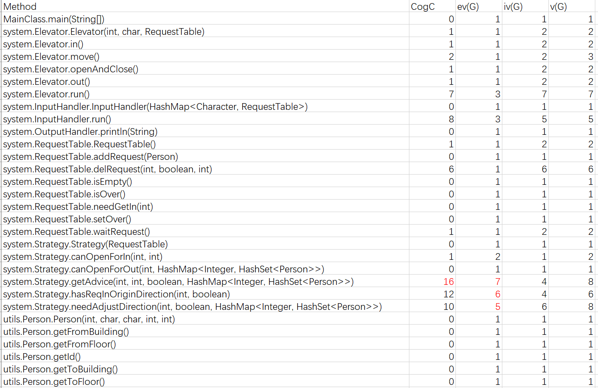
由上面的分析可知，Strategy类中gerAdvice()、hasReqInOrigin()、needAdjustDirection()三个方法的复杂度较高。主要原因是Strategy类需要对电梯和请求队列的状态进行分析，从而为电梯提供建议，而整个判断过程需要较为复杂的逻辑（循环、大量if-else），因此复杂度显著高于其他方法。
但总体来说，本次作业代码的整体复杂度较为理想。主要是因为有了第一单元的经验，在设计时注意遵循了单一职责原则，避免出现较长的方法和类。
代码UML图
类图
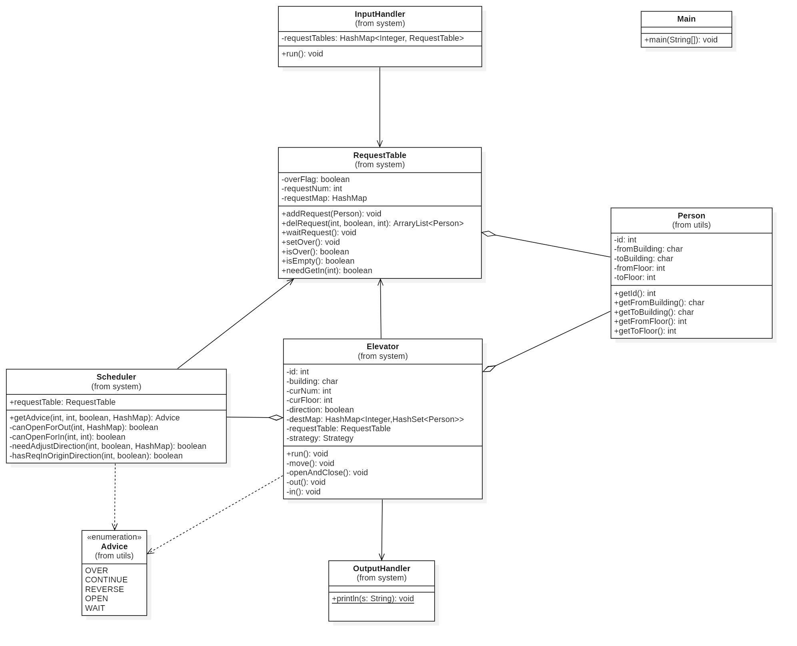
时序图
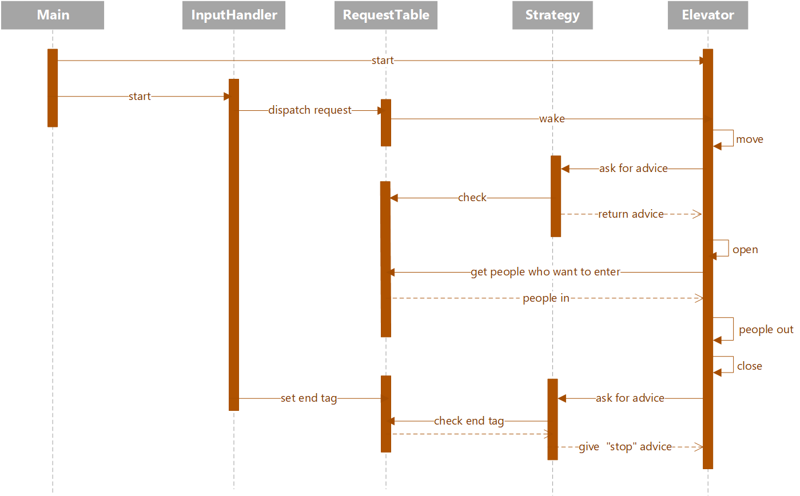
第二次作业分析
第二次作业在第一次的基础上增加了横向电梯，这种电梯只能在某一楼层的不同楼座（A-E座）之间运动。此外，每一楼座、每一楼层的电梯也不止一部，可以动态增长。
代码架构分析
工厂模式
本次作业电梯种类有所增加，为了提高代码可扩展性，我采用了工厂模式进行设计。首先我定义了一个抽象电梯类Elevator，该类实现Runable接口，并重写了run()方法（run()在Elevator类中是抽象方法）。然后我又定义了VerticalElevator类和LateralElevator类来继承Elevator，这两个类分别表示纵向电梯和横向电梯，并都对父类的run()方法进行重写。
当输入线程接收到“增加电梯”的指令时，就会把该请求传到工厂类对象中，然后工厂类根据新增电梯的类型生产出对应类型的电梯，向上转型为Elevator然后返回。
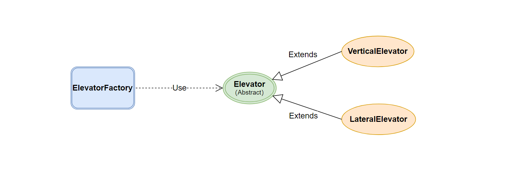
此外，不管是横向电梯还是纵向电梯，都需要策略类来为电梯提供建议。但是，横向电梯和纵向电梯的调度策略又不完全相同，因此我们不能用一个策略类来组装两种电梯，而是需要为每一种电梯分别建立一个策略类。
不同的策略类都需要getAdvice()方法为不同电梯提供建议，在行为上有相似之处。基于抽象原则，我们定义了一个策略类接口Strategy，并在该接口中定义getAdvice()方法，然后定义VerticalStrategy类和LateralStrategy类分别实现该接口。电梯工厂在生产电梯时，会根据电梯种类来选择对应的策略类进行组装。
/*ElevatorFactory.java*/
public class ElevatorFactory {
public Elevator create(...) {
if (type.equals("building")) {
Strategy strategy = new VerticalStrategy();
return new VerticalElevator(strategy, ...);
} else {
Strategy strategy = new LateralStrategy();
return new LateralElevator(strategy, ...);
}
}
}调度策略
单电梯调度
VerticalStrategy类为纵向电梯提供建议，因此可以直接使用第一次作业的设计。而在LateralStrategy类中，我采用的是一种
"类似LOOK"的策略——
我们知道，横向电梯是可以在五个楼座之间循环移动的，因此无论你在哪一座，都可以按任意方向运动至目标楼座。但是，如果电梯自始至终都按一个方向运动，在某些情况下效率会比较低下。例如，有乘客想要从A座乘电梯到达E座，如果事先规定的方向是顺时针，那么电梯运动的路线就是A->B->C->D->E。但是，显然A->E路线会更快。
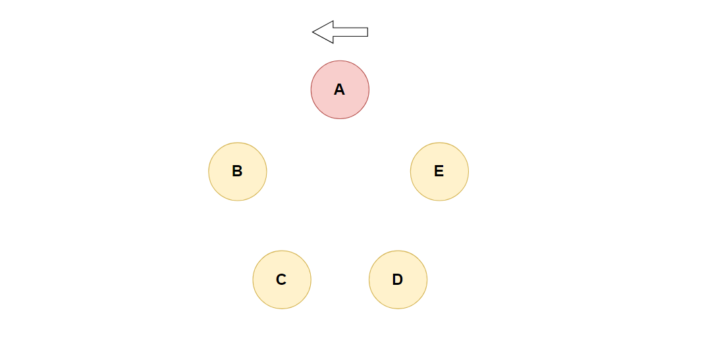
为解决上述问题，我借鉴了LOOK算法中 "及时掉头"
的思想，让策略类根据电梯和请求队列的当前状态来判断当前是否需要掉头。"掉头"需要同时满足以下两个条件——
-
电梯"前方"的两个座都没有请求发出，只有"后方"两个座发出来请求（无需关注请求的方向，因为横向电梯不采用同向捎带的策略，而是能接则接）。通过上图来解释就是，目前电梯在A座，而B座和C座没有请求发出，而D座和E座中至少有一个发出了请求。
- 电梯里没有人，或者电梯里乘客的目的地都是电梯"后面"的两个座。
多电梯协同
策略类只是为一个电梯的运行提供建议，但是每一个楼层（座）可能配置有多个电梯，那么这些电梯之间是如何协同的呢？或者说，如何把该楼层（座）的请求分配给这些电梯呢?
最终，我采用”自由竞争“的策略来解决电梯间协同的问题。
首先，每个楼层、每个楼座都有一个请求队列（一共有是15个），而每一个请求队列都被某楼层（座）的所有电梯拥有。整个结构如下图所示——
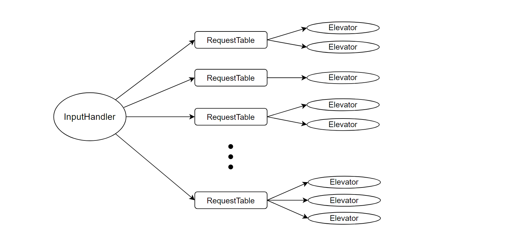
每个电梯的策略类在决策的时候，都是根据该电梯当前状态和整个请求队列的状态进行判断，并提出建议。此时，同一楼层（座）的两部电梯可能会按照策略类的建议开门接同一个请求，即两者竞争资源，但最终只有一个电梯能真正接到。
此时，我们会遇到一个线程同步问题——两个电梯同时在某一层竞争一个请求，一个电梯开门并接到了，但是此时另一个电梯只是开了门，但并没有接上人，白白浪费了一次开关门时间，导致在性能上大打折扣。
本人采用 "二次咨询+缓冲队列"
的方式解决这个了问题——当电梯运行到某层时会向策略类咨询建议，如果发现当前建议是OPEN，电梯会重新咨询一次策略类，如果此时的策略仍然是OPEN，那么我们就先把该楼层（座）可以上电梯的乘客放在一个缓冲队列中，电梯开门后再将缓冲队列中的乘客加入电梯。需要注意的是，"二次咨询"和"加入缓冲队列"两个操作应该加锁，使其变成一个原子操作，这样就可以保证另一个电梯在二次咨询时不会得到OPEN的建议（因为此时能接的乘客已经从请求队列中移出，进入另一个电梯的缓冲队列中了）。具体实现如下——
/*VerticalElevator.java*/
public void run() {
while (true) {
Advice advice = strategy.getAdvice(num, building, ...);
if (advice == Advice.OVER) {...}
else if (advice == Advice.MOVE) {...}
else if (advice == Advice.REVERSE) {...}
else if (advice == Advice.WAIT) {...}
else if (advice == Advice.OPEN) {
HashSet<Person> peopleServed = null; //缓冲队列
synchronized (requestTable) {
//二次咨询
Advice checkOpen = strategy.getAdvice(num, building, ...);
if (checkOpen != Advice.OPEN) {
continue;
}
//将能接的人从请求队列中移出，加入到缓冲队列中
peopleServed = pickPeople(num, floor, direction);
}
openAndClose(peopleServed);
}
}
}代码复杂度分析
Method Metrics
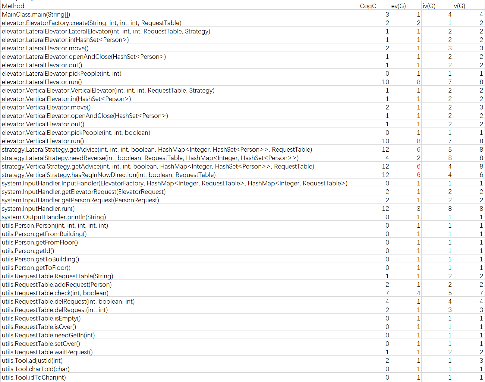
和上一次作业相比，这次VerticalElecator和VerticalElevator中run()方法的基本复杂度也显著上升，主要是因为，我们为解决空开门的问题使用了
"二次咨询+缓冲队列"
的机制，这种机制的引入使判断逻辑变得更加复杂。
代码UML图
类图
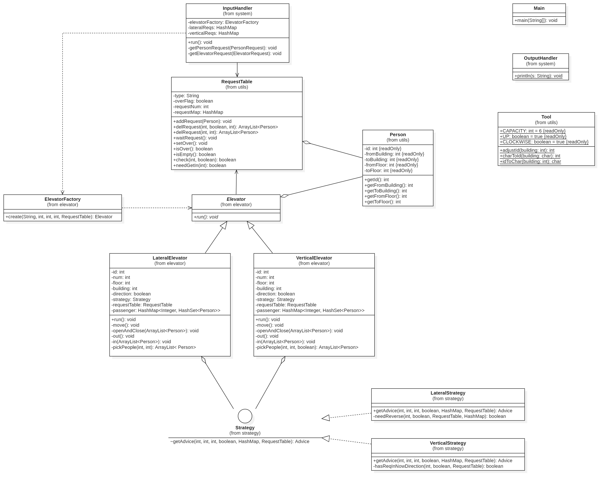
时序图
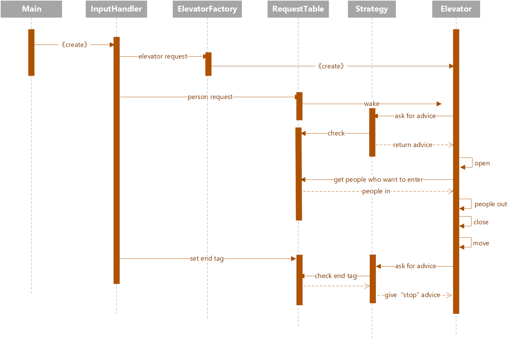
第三次作业分析
第三次作业增加了3个新要求——
- 电梯容量和运行速度可自定义
- 横向电梯的停靠楼座可自定义
- 可能会出现乘客换乘问题
代码架构分析
电梯类的迭代
在本次作业中我们仍然沿用工厂模式。但是，本次电梯的
运行速度（speed）和容量（capacity）
是可以自定义的，所以我们需要在抽象电梯类Elevator
中增加这两个成员变量。此时，子类VeritcalElevator和LateralElevator也会拥有这两个属性。
另外，横向电梯并不是在所有楼座都可以停靠，因此我们还需要在LateralElevator类中单独设置一个SwitchInfo变量来记录可停靠信息。当横向电梯策略类在判断是否可以开门接人时，必须考虑
"电梯是否能够在该楼座开门" 以及
"电梯能否在乘客的目的楼座上开门"。
流水线模式的使用
本次作业中乘客可能需要几次换乘才能到达目的地，为了解决这个问题，我采用了课上实验课学到的流水线模式。
首先，经过简单分析可知，每一个乘客的请求都可以分成三段——先纵向、再横向、再纵向。对于一些同楼层（座）的请求也可以分成三段，只不过在其中某段可能会出现
"目的地和出发地相同"
的情况，例如"A3->A6"可以拆分为"A3->A3, A3->A3,
A3->A6"。此时，我们需要对请求类Person进行一定修改，以满足分段需求——
/*Person.java*/
public class Person {
private final int id;
private int nowStage;
private final ArrayList<Route> routeList;
//...
}
/*Route.java*/
/*用该类来封装每一阶段的请求*/
public class Route {
private final int fromBuilding;
private final int toBuilding;
private final int fromFloor;
private final int toFloor;
//...
}而请求的分段操作是在Controller类中完成的。Controller类是一个全局控制器，采用单例模式，它有两个作用——
- 将
InputHandler类输入的乘客请求分成三个流水段，并封装到一个Person类中。 - 根据请求当前的执行阶段将其分配给相应的请求队列，最后由拥有该请求队列的电梯处理。每当电梯完成一个阶段，电梯就会把该请求"扔回到"
Controller，并由Controller将请求再分配，让其他电梯执行下一阶段的任务。如果控制器发现某请求的所有阶段都已经执行完，则不再将其分配。
最后整个流水线模式的架构如下图所示。
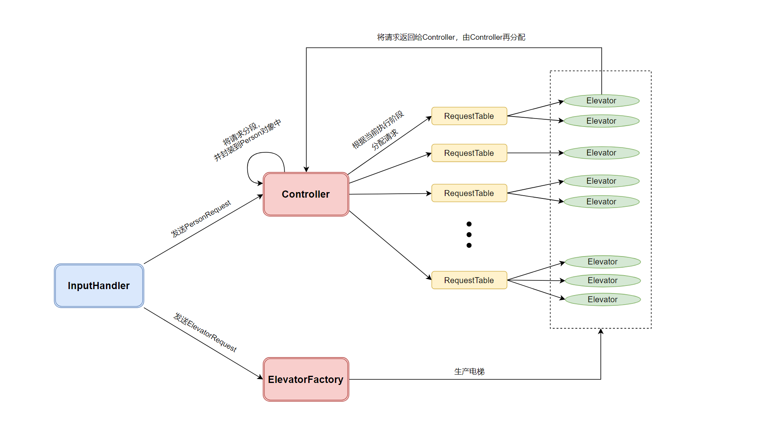
关于中转楼层的选择，我采用的是指导书上的基准策略——假设乘客的起始楼座为P，目的楼座为Q，起始楼层为X, 目的楼层为Y，则中转楼层m满足如下公式：
存在 "(M >> (P -'A')) & 1) + ((M >> (Q -'A')) & 1) == 2"，且使"|X-m| + |Y-m|"最小的m
电梯结束问题
设想这样一种情况——
- 输入线程发现了文件结束符，于是通过
Controller给每个请求队列的EndTag都置为True。 - 此时电梯A中所有请求都已完成，而且它的策略类发现电梯所在楼层（座）的请求队列的
EndTag是真，于是向电梯发出了OVER建议，该电梯线程结束。 - 此时，另一个楼层（座）中的电梯B正在处理某请求R的第2阶段。不幸的是，R的第3阶段需要A来执行，所以，R请求会永远无法被满足。
因此，在本次作业中，我们不能直接根据文件结束符来判断是否应该将请求队列的EndTag置为真，而是应该等待所有请求都执行完。这个问题我们可以通过设计RequestCounter类来解决。
/*RequestCounter.java*/
public class RequestCounter {
private int cnt;
//...
public synchronized void release() {
cnt++;
notifyAll();
}
public synchronized void acquire() {
while (true) {
if (cnt > 0) {
cnt -= 1;
break;
}
else {
try {
wait();
} catch (InterruptedException e) {
e.printStackTrace();
}
}
}
}
}RequestCounter和我们在OS课上学到的信号量（Samaphore）极为相似，而release()和acquire()两个方法分别对应信号量的
P操作和V操作。这两个方法分别在Controller类和InputHandler类中使用——
- 当一个请求的所有阶段都完成，
Controller会调用release()方法，使计数器的值加1。 - 当输入线程
InputHandler获取文件结束符后，会连续调用n次acquire()方法（n表示乘客请求的总个数），每次调用都会使计数器的值减1（如果在减操作之前发现计数器值为0时，则会等待计数器大于0之后再减1）。当n次acquire()都成功执行，则说明所有的乘客请求都已经处理完毕了，然后就可以将所有请求队列的EndTag置为真。
/*InputHandler.java*/ public void run() { int personNum = 0; while (true) { //... } //输入结束之后执行personNum次acquire()方法 for (int i = 0; i < personNum; i++) { RequestCounter.getInstance().acquire(); } //所有的请求都已经执行完毕，通过Controller将所有请求队列的`EndTag`置为真 Controller.getInstance().setOver(); }
这样一来，电梯结束的问题就成功解决了。
代码复杂度分析
Method Metrics
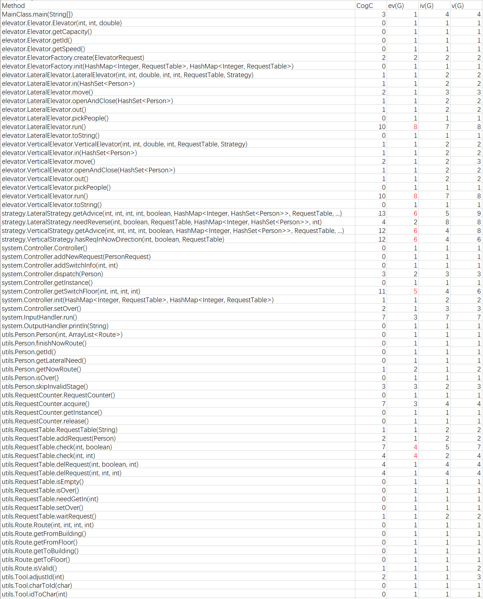
第三次作业的新增方法pickPeople()和getSwitchFloor()的复杂度也比较高，主要是因为本次作业横向电梯的可停靠楼座可以自定义，导致我们在请求队列中接人时，还需要特判电梯是否可以在该楼座开门，以及电梯能否在乘客的目的楼座开门。因此，方法复杂度高也不足为奇。
### 代码UML图
类图
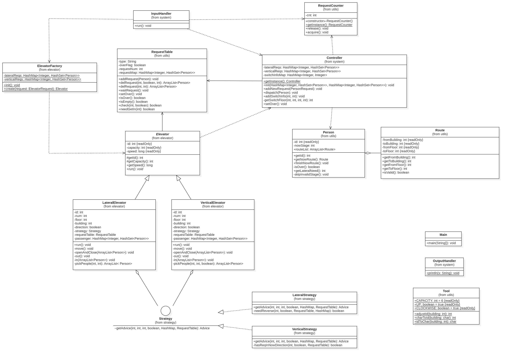
时序图
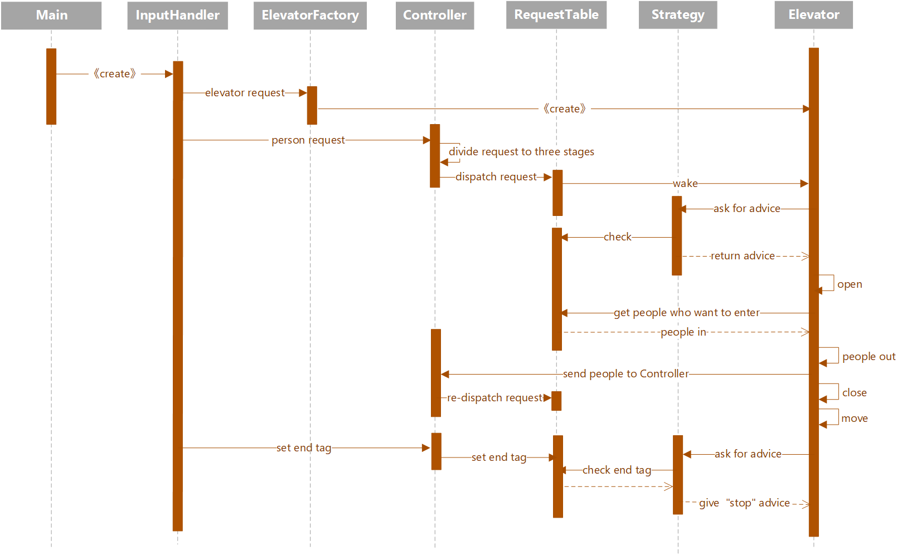
个人bug分析
前两次作业的强测和互测均没有发现问题，但是在第三次作业的强测中有一个测试点出现了RTLE（运行时间超时）。一开始百思不得其解，后来重读了一遍代码才发现原来是Controller类中setEndTag()方法中少给了一个请求队列加锁，使得程序无法正确地将请求队列中的endTag置为真，最终导致线程无法正常关闭。
关于测试
在这一单元我仍然采用自动化测试来寻找代码bug，测试程序分为两部分——
- 数据生成器
- 输出检查器
数据生成器
数据生成是用随机数的方式来实现的。为了让数据生成器也有很好的可扩展性，我将某些功能封装成了函数，便于在做后面的作业时对数据生成器进行修改和迭代。此外，在设计数据生成器时还需要注意指导书上提到的一些“数据规范”——
- 电梯系统的指令数：1~70条
- 不能向没有电梯的楼层或者楼座发起请求
- 第一条指令的投喂时间在 1s 或 1s 以后
- 每个楼层（座）的电梯不能超过3个
- 电梯总数不能超过15个
- 电梯速度只能是{0.2, 0.4, 0.6}中的一个，电梯容量只能是{4, 6, 8}中的一个
- ...
整个数据生成器的架构如下所示
MAX_FLOOR = 10
MAX_TIME = 50
MAX_REQ_NUM = 50
MAX_E_NUM = 15
MAX_E_NUM_PER_BUILDING = 3
MAX_E_NUM_PER_FLOOR = 3
SINGLE = True
MULTIPLE = False
MAX_INT = 1 << 31 - 1
#sets of people and elevator
p_id_set = set()
e_id_set = {1, 2, 3, 4, 5, 6}
#number of elevators per building or per floor
building_acess_map = {'A':1, 'B':1, 'C':1, 'D':1, 'E':1}
floor_acess_map = {i:0 for i in range(2, MAX_FLOOR + 1)}
floor_acess_map[1] = 1
# tags of building and floor
building_tags = ['A', 'B', 'C', 'D', 'E']
floor_tags = [i for i in range(1, MAX_FLOOR+1)]
speed_list = [0.2, 0.4, 0.6]
capacity_list = [4, 6, 8]
#initial data
time = 1.0
e_num = 5
req_num = 0
# Functions for get relative information
def get_p_id() :
def get_e_id() :
def get_time_gap() :
def get_building() :
def get_floor() :
def get_switch_info() :
def get_capacity() :
def get_speed() :
# Functions for checking
def check_floor_can_add() :
def check_building_can_add() :
# Functions for generating person requests or elevator requests
def gener_p() :
def gener_e() :
def gener_virtical_e() :
def gener_lateral_e() :
# main
if __name__ == '__main__':
num = random.randint(20, MAX_REQ_NUM)
global time, e_num, req_num
time = 1.0
while (req_num < num and time < MAX_TIME):
choice = random.randint(0, 5)
if (choice > 0 or choice == 0 and e_num >= MAX_E_NUM) :
gener_p()
else :
gener_e()
e_num += 1生成的请求不能任其随机分布，还需要对某楼层或者某楼座进行压力测试，即只针对一楼层（座）生成大量请求。另外，我们可能还需要仅对横向电梯测试或者仅对纵向电梯测试。为了满足多样性的需求，我还为数据生成器增加了许多“模式”可以选择。
例如在第二次作业的数据生成器中，我专门设计了dst_mode和run_mode两个全局变量用来表示数据生成的模式，前者可取LATERAL、VERICAL、CROSSING三个值，后者可取SINGLE和MULIPLE两个值，两个变量进行组合就有6种不同的模式。
'''
Copyright (C) 2022 BUAA
Author: Hyggge, <czh20020503@buaa.edu.com>
You can use this program to generate test data, which can be used in Unit 6 of BUAA-OO.
Before run it, you should choose a operatatin mode based on your need. To change the mode,
you need modify the values of "dst_mode" and "run_mode". The introduction is shown below.
############################## Mode Introduction #################################
____________________________________________________________________________________
| dst_mode | run_mode | Introduction |
| -------- | -------- | -----------------------------------------------------------|
| SINGLE | VERTICAL | Only "certain-building" has vertical elevators |
| SINGLE | LATERAL | Only "certain-floor" has lateral elevators |
| SINGLE | CROSSING | Only "certain-building" and "certain-floor" have elevators |
| MULTIPLE | VERTICAL | Every building can have vertical elevators |
| MULTIPLE | LATERAL | Every floor can have lateral elevators |
| MULTIPLE | CROSSING | Every building and every floor can have elevators |
------------------------------------------------------------------------------------
'''
# const defination
LATERAL = 1
VERTICAL = 2
CROSSING = 3
SINGLE = 1
MULTIPLE = 2
# variable for mode selection
dst_mode = SINGLE
run_mode = LATERAL
certain_building = random.choice(building_tags)
certain_floor = random.choice(floor_tags)
#...输出检查器
在这一部分，我们需要对作业代码的运行结果进行检查。需要检查的内容包括——
- 输出格式是否正确
- 电梯是否已经超载
- 电梯运行速度和开关门速度是否满足要求
- 电梯开关门是否符合常理（电梯不能先关后开，不能在电梯关门后再让乘客进出）
- 电梯到达的楼层或者楼座是否真实存在（电梯不能跑到-18楼...）
- 电梯在某楼做是否可以停靠（主要针对横向电梯，需要结合输入数据进行判断）
- 所有乘客的请求是否全部满足（检查是否出现“电梯吃人”或者“请求饿死”的现象，需要结合输入数据进行判断）
- 从电梯里出来的乘客是否真实存在（细思极恐...）
心得体会
- 写代码时注意遵循"SOLID"原则，这会使我们省去不少debug的麻烦。
- 多多关注讨论区。在本单元的讨论区中我学到了不少新知识，比如CPU时间查看、泛型的使用、监视器底层原理等等。
- 加锁要慎重。我们需要对共享对象做同步处理，但并不意味之要将所有的方法都加上锁，这样会极大影响并行效率。此外，要注意尽量不要在方法上加锁，而是优先使用
synchronize同步块，减少同步区域，提高性能。 - 架构设计时应注意层次化。先根据需要实现的功能把工程划分成几个不同的功能模块，并规定好不同模块之间的接口，然后再自上而下依次实现。这样不仅有利于降低整个工程的复杂度，还有利于后期的迭代。